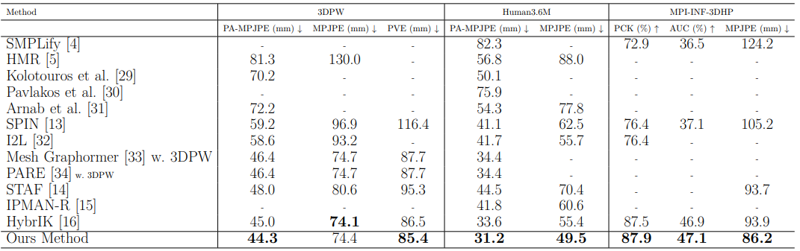

Flowchart for our system.
Flowchart for our jointlifter which lifts 2D joints to 3D. This shows as (b) in the system flowchart.


Results of generating smpl on images with one or multiple people.
ABSTRACT:
3D human pose and shape estimation is essential for applications such as animation, virtual reality, and human-computer interaction because it can provide accurate and realistic human models. In this thesis, we present a comprehensive system that integrates techniques from multiple research fields for 3D human pose and shape estimation from a single 2D image. Our approach employs a multi-resolution Convolutional Neural Network (CNN) for predicting accurate 2D human joints, a Transformer-GCN architecture method for lifting 2D joints to 3D, and an SMPL (Skinned Multi-Person Linear) model-based Inverse Kinematics (IK) solution for determining SMPL parameters. We optimize the system by fine-tuning components to utilize human body geometric constraints for better prediction accuracy. Additionally, we adapt Transformer-GCN to better recognize geometric constraints of the human body and handle sequential human joint data instead of traditional temporal inputs like video frames. This integrated technique allows for more precise and contextually aware joint estimations and achieves more accurate Inverse Kinematics solutions. Our approach outperform previous state-of-the-art shemes across various 3D human pose and shape benchmarks by 7.7mm MPJPE (Mean per joint position error) value on 3DHP dataset and 7.9mm MPJPE value on Human3.6M dataset.
RESULTS:
Comparison with other methods on 3D Human Pose and Shape Estimation Benchmark (3DHP, Human3.6M datasets, 3DPW).

REFERENCES:
[1] M. Loper, N. Mahmood, J. Romero, G. Pons-Moll, and M. J. Black, SMPL: A skinned multi-person linear model, ACM Trans. Graphics (Proc. SIGGRAPH Asia), vol. 34, no. 6, pp. 248:1-248:16, Oct. 2015.
[2] J. Li, C. Xu, Z. Chen, S. Bian, L. Yang, and C. Lu, Hybrik: A hybrid analytical-neural inverse kinematics solution 3d human pose and shape estimation, in Proceedings 838 of the IEEE/CVF Conference on Computer Vision and Pattern Recognition, pp. 3383-3393, 2021.
[3] A. Vaswani, N. Shazeer, N. Parmar, J. Uszkoreit, L. Jones, A. N. Gomez, L. Kaiser, and I. Polosukhin, Attention is all you need, 2023.
[4] H. Kang, Y. Wang, M. Liu, D. Wu, P. Liu, and W. Yang, Double-chain constraints for 3d human pose estimation in images and videos, arXiv preprint arXiv:2308.05298, 2023.